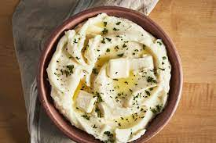

Holiday Mashed Potatoes
Mashed Potatoes

Description
These mashed potatoes are too fattening to have on a regular basis. I only make these on holidays, and everyone wonders what's in them that's makes them so rich.
Ingredients
- 5 lbs of Red Potatoes (peeled and quartered
- 1 cup Heavy Cream
- 1/2 cup Butter
- Salt and Pepper
Instructions
- Place potatoes in a large pot with enough water to cover. Bring to a boil, and cook until fork tender, about 20 minutes. Drain, add butter, and mash using a potato masher, ricer or mixer. Gradually beat in the heavy cream. Serve hot!